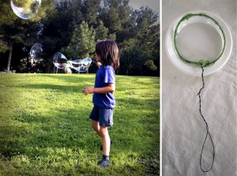

Blow bubbles
Wrap wool arround a wire circle. This makes it possible to do some giant bubbles, like Lluna in this foto.


Blow bubbles
Wrap wool arround a wire circle. This makes it possible to do some giant bubbles, like Lluna in this foto.

Driving route for kid´s cars As you can see in the right image, we cut the streets out of black paper to play with the cars…
Read more →
Faces: Stamp color with your fingers. Draw faces on the finger marks. We drew them together watching whom is drawing the others.
Read more →
Tower 03 At beaches with stones you can construct very high towers using stones with the same shape but with different dimension. You put one over…
Read more →

That is ME: Paint yourself on a mirror: eyes, ears, mouth... To use face colors is the best because it looks good and it is easy…
Read more →
Dream house We cut some images of old magazines, in which we would like to go for a walk. We glue them like windows on a…
Read more →